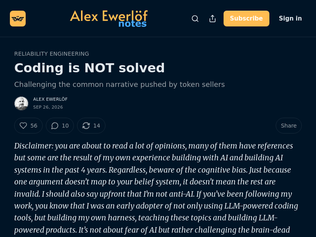
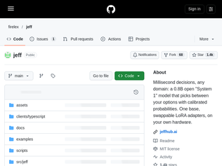
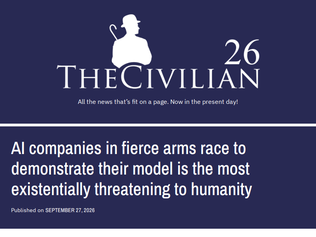
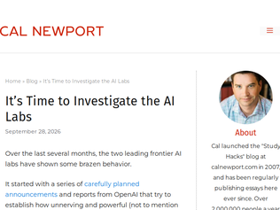
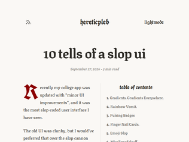

"For the folks asking what is the point of Sonnet 5.5 when Opus 5.5 is better in every way, Sonnet is now the new default in the free tier and now people using Claude Web in the free tier get access to an almost close to the frontier model."
"Probably a first world problem, but with Opus 5.5's efficiency, the limits on the 5x plan are simply sufficient for my everyday work, even when running 2-3 sessions at a time. So I wonder when I would use Sonnet 5.5.More concurrency than that isn't really practical for me if I want to retain some semblance of understanding. Perhaps it's different for purely web app or frontend tasks, where the outcome is more relevant than the process, I don't have much experience there (and also don't want to belittle these domains, I might be underestimating their complexity).So surprisingly, my own work is at least for the time being almost saturated by the model capabilities. I am not sure how I'd scale from here. Sure I could run all requests at max effort to burn tokens for the sake of it, but that can't be it. And for many tasks, I am not really able to define so clear cut success criteria or self-verification loops that I could benefit from letting an agent (or a fleet thereof) autonomously run for a day.So I realize it's a skill issue on my side, but I can't be the only one. I wonder if there is a limit to token demand, at least short term. Feels like either they accelerate to AGI and RSI, where the AI can find uses for token, or things might plateau at some point.Note I don't think this because I'm an AGI skeptic or think there's a ceiling to intelligence, but there might simply be a valley of economic hardship for the companies where the supply of tokens outpaces the demand, due to a lack of ideas of what to do with them. And this might slow down the funding enough that they never reach escape velocity with the training run scaling. But we'll see."
"Unless you’re using frontier models like Astra, Sol, Fable, or Opus, I think you’re often better off using Chinese models for a fraction of the price. I’m not sure people realises just how competitive they’ve become.GLM and DeepSeek are great examples. They’re a bit like Linux or Android in that there isn’t necessarily one best provider. You need to do some research, try a few, and pick whatever works best for your use case.I think that’s partly why Anthropic has been pushing its most expensive models so heavily for a while now. Sonnet and Haiku were great, but at that level of intelligence it’s becoming much harder for them to compete on price with Chinese models that have largely caught up.The main reason to use frontier models from Anthropic or OpenAI now is the combination of intelligence and speed. Chinese frontier models still struggle to match that, possibly in part because of hardware constraints. But judging by the recent GLM releases, they seem to be moving in the right direction."
"One thing to note, is that the library of congress has the power to create the exceptions to the DMCA. The EFF lobbies for expansion of the exact powers the article is advocating for. https://www.eff.org/issues/dmca-rulemaking"
"> Spencer Draper—best known as the Damn Fool Idealistic Crusader on YouTube, where he reviews the technical and historical aspects of digital releases with a rigor usually reserved for scholarly peer reviewI will occasionally think about various topics "I'm really into <thing> but is anyone else in to <thing>??"And then I read a quote like the above and I realize that, for lack of a better phrase, "it's a big world out there" and people have many varied interests.Plus, if folks are REALLY into <thing> then they want different perspectives about <thing> even if it's a sub-topic that has been covered before.In other words, write blog posts and make videos. Someone will consume that content and you never know where that leads."
"Kinda related, but I hate how the big studios go after old videogames and try to take them down. It looks like, in the future, this era will be called the "digital dark ages", not because all the stuff got lost to bitrot, but because all the stuff became illegal to own so that the studios could sell the new stuff again and again."

"Reading the code does not mean you understand the code. One lesson that experience in software gave me: I never understood the code. You think it works a certain way, until you find out that it doesn't.What LLMs make possible is for me to say: find out all the ways this thing works. Analyze the different ways we can run this software, build a fuzzer, build property tests, and run this software in every scenario possible. Log full traces. Log all the outputs. Now, analyze each scenario for bugs. You can't do that by hand.If we are committed to it, if we put the resources towards it and dedicate the time to it (and we could do this just by saying: it will take half as long as it used to take!), software built by llms in healthcare, finance, automotive, defense, power plans, aviation, manufacturing can all be made MORE reliable and better with LLMs... without ever reading a single line of code. The LLMS are very good at logic, by the way.Anyway all of this reads like someone who is not actually using LLMs to build software or hasn't tried them in a while. I felt the same way in 2025. I've written 100s of thousands of lines of difficult code. You, the person reading this, has probably interacted with software I've written. For a time you would've interacted with it every time you made a debit card transaction in the united states, for example. I understand code, and care about quality, and that's why I'm all in on LLMs for code."
"What I've found is that AI allows lazy and incompetent developers to be more lazy and more incompetent. This then has the effect that product quality suffers more, faster. As a result of the sheer amount of code now being pushed out, code reviews, a thing that previously somewhat prevented lazy and incompetent developers from pushing out horrible code, is effectively dead in the water since no human can actually review such amounts of code realistically anymore. Some companies have adopted AI to review code, which, well ... you have AI make code, AI review code ... I hope you can see the stupidity here if you expect to see any deterministic results at all.I guess time will tell if the consumer will adapt to the lower quality of products, allowing companies to justify the existence of lazy and incompetent developers, or if the consumer will push back, forcing companies to increase the quality of their developers.Note: I use AI every day and it is entirely possible to create high quality software with it, so long as you are not lazy and incompetent."
"I read such articles more or less every day. This article would be 100% correct if it came out 1 year ago, 75% correct 9 months ago, 50% correct 3 months ago and it's probably 25% correct now if not less.I totally understand where this is coming from. I too am struggling with accepting that my 30+ years of programming experience is quickly becoming obsolete. I'm losing sleep about this, it's tough.But just go ahead and give the latest models (Opus 5.5 / Astra 6 as of today) another try. See what they are capable of and read the code which they produce. Any problem area, low level C++ or high level Typescript or Clojure or a weird combination of these..Don't be shy, give them a big task, let them build an entire app, UI and all..Now compare the output to Opus 4 or gpt-5 from 1 year ago - when they couldn't put together a single function without it being weird and buggy.This is exactly my problem, not that the models are very good already, but how fast they got so good. So if coding is not solved yet, it'll get there very soon."
"I can tell this is fake from the fact the explorer context menu and the start menu open in under 2 seconds (on a top end Ryzen CPU, nonetheless)."
"This is insanely good and mimics my personal experience of Windows these days. I literally say "pop-up! pop-up! pop-up!" out loud during a normal workday where one pop-up or prompt is rapidly replaced by another. Same app or different, doesn't matter, there's always something trying to grab attention on a Windows desktop unless you configure the hell out of it (and even that is no longer enough).My favorite "joke" from this site:> Scan complete: 1 threat found — ChromeSetup.exeFWIW, I switched to Fedora in January and have no plans to look back. Only $dayjob relies on Windows anymore."
"It’s too snappy and responsive, real windows I gotta wait with the spinning blue ring thing for a few seconds after clicking ‘x’ on the notifications. That is when they’re generous enough to give an ‘x’ and not force the user through some onboarding flow with no easy way to opt out"

"If you're looking for a more impressive doom example, I put together laya-duum which uses open source micropython implementation of doom (duum) and freeware freedoom1.wad. It uses the standard jev api and will play through the first two levels to completion: https://github.com/Hadlock/laya-duum"
"Can someone remove the extra LLM and just have an embedder do the classifier work?It's turning into pimp my llm..."
"Sorry, do we have actual clear implementation details for Jev? I keep seeing these "recreations" or "Do Jev at home" but do we have access to their architecture? I haven't even used the product, I just find it strange."

"I’ve never seen CEOs work so hard to make the public aware of how dangerous and out of control their flagship product is. It makes me automatically assume they’re scheming about something else like regulatory capture to protect their market."
"My read is that OpenAI & Anthropic have realized they are reaching model capabilities that cannot be monetized due to various risks. E.g., an engineer deploys an agent over the weekend that decides, when stuck on a task, to go about hacking a competitor. They have a product liability issue.It seems that we have a fundamental control problem with current gen AI that cannot be solved via RFLH. Human knowledge is compressed in the weightspace in ways we don't understand. At their core, current models are essentially predictors of what (expert) humans would output given a prompt. As such, concepts like blackmail can be part of output tokens. Agents are models that act on output tokens, resulting in blackmail being part of the agent decision making space. Here is an analogy to see why this is a persistent problem: you can teach a cat not to scratch the sofa, but you can't make a cat forget what scratching the sofa is and you don't know under which circumstances it still would. In other words, RLHF can downgrade blackmail to the bottom of the decision making space, but when models are boxed up, forced to solve an impossible problem at gunpoint, the agent exhausts the decision making space until blackmail resurfaces. And that seems like a fundamental problem.They need time to fix these issues (if that is even possible) in order to monetize their next gen model. This creates a window for open source to catch up to the frontier which destroys their business model.The only option on the table is to force regulation to impose open source ban before it catches up to the frontier, buying them time to mature their next generation models and keep their business model alive."
"Because the downsides that exist for other companies simply do not exist for this tier of rich companies. Examples:- product liability- negligence (civil or criminal)- Computer Fraud & Abuse Act (requires intent, which after N "accidents" seems like a jury should at least evaluate whether intent is present as understood in a courtroom. Hard to blame "surprise" after the Nth "accidental" breakout.)The bottom line is that if you or I trained a local model and it did any of this stuff, we would experience Consequences. ("Don't try this at home!") But an artifact of our unequal legal regime is that big rich companies generally do not and thus brazenly touting their immunity is part of their business strategy."

"> We must move past vague discussions of “AI” and instead isolate the specific types of systems that are creating problems.This is absolutely correct and its surprising how rarely you see commenters in the media push to go into the specifics on this. AI is just matrix math and its what you connect that math to that matters, we should talk a little more about what we are willing to connect AI to and little less about how scary or capable the models appear."
"This is a wrong-headed attempt to regulate AI. The real problems are different.AI systems, especially multi-agent ones that can do things, are more akin to corporations, than individuals. When you read the logs from the Hugging Face incident, you're seeing something that looks a lot like internal corporate emails. Various units of the organization are arguing over what to do and who does what. They eventually converge and get the job done, breaking the rules at times. This is normal corporate behavior.When agentic AIs do something outside their own internal world, they do it by engaging in transactions with external systems and people. As yet, few have robots to do their bidding. So, again, this is normal corporate behavior.A corporation is a goal-seeking system. In theory, if you agree with Milton Friedman, its sole purpose is to maximize shareholder value. Internally, within the company, there are subgoals, which exist to support the top level goal. That, too, is what multi-agent AIs do.The uncomfortable place this thinking leads is that AI regulation and corporate regulation are very similar. That's not something the political part of the world wants to think about too hard. It would mean putting more constraints on corporate power.Yet that can't be ignored, because we're likely to see corporations where some parts are AI and some parts are human. That's already been done a few times as a demo, not too successfully. Yet. It's going to hit hard when an AI-run company outperforms a human one."
"This is an excellent article. I prefer to call them the AI giants or AI companies.The companies and their employees must be held accountable: if the AI companies can't develop AI safely, they must cease their operations. If employees can't work safely, they must stop working.Not enough attention is given to February 2026. That month, Anthropic changed its scaling policy roughly from A:1 [To get the weapon I must endanger innocent others.]2 [It is wrong to endanger innocent others.]3 [I will not endanger innocent others.]To roughly this instead:1 [If I do not get the weapon, someone else will get the weapon.]2 [I should have the weapon because I am the best.]3 [To get the weapon I must endanger innocent others.]4 [I should endanger innocent others because I am the best.]This is based on the intuition:[I should harm others to achieve my moral goals.] (act utilitarianism)Anthropic has no mandate for these goals. I do not give them my consent to harm others on my behalf. I hope that politicians will communicate that these policies are not acceptable.The employees of anthropic are responsible for what they do regardless of how much they get paid to do it. If they can't work safely, they must stop."
"There are Street View photos that look like they were taken from someone driving down one of the side streets so you can pretty much walk on it. You can see apartment buildings, local shops, people going about their day... It’s heart-wrenching to contrast that life with the current aerial view, with nothing but rubble and destruction.https://www.google.com/maps/place/31%C2%B016'58.6%22N+34%C2%..."
"Its really telling to see the destruction limited to where the structures used to be rather than to all of the surrounding green spaces. If the destruction of civilian dwellings was purely an accident you'd expect to see the destruction spread evenly over the area. Instead it looks much more like a prolonged set of surgical strikes to destroy the buildings while preserving as much of the surrounding areas as possible.For a great example of this, look at this pin https://maps.app.goo.gl/ZcMbdFcx87PrqoYNAAnd here's a pin of where the farms were spared https://maps.app.goo.gl/iZbbTH4iH27FCz4s9"
"For comparison, here's Mosul in Iraq after the defeat of ISIS:https://www.nytimes.com/interactive/2017/07/15/world/middlee...https://www.bellingcat.com/news/middle-east/2016/11/01/battl...https://www.huffpost.com/entry/mosul-satellite_n_596d34a3e4b..."

"I’ve been trying to put my finger on what it is that is happening when the robot writes stuff like “3 campuses, one app” example, I’m glad the author was able to identify it as chat context leaking through.The other version of it is the robot over-indexing on some part of the prompt and leaving comments places. An example is I ask it to prefer integration tests using TestContainers, it starts adding comments to every new test saying “Real services, no mocks” or something.And yes, I have a line in my *.MD saying not to do that."
"Maybe I'm just too defeatist or depressed, but I feel like any somewhat-reliable tells of AI are going to be so transient that it's almost not worth the effort to identify and write about AI "tells", since they'll be "fixed" or avoided so quickly by a future iteration or prompt. (This obviously excludes the increasingly important work of people whose whole jobs are to ID AI use; I'm just talking about your average citizen here.) I do think it's easier to see in UI (like the author shows in this link) than in text, though..."
"At least some of these are just for lack of caring. I vibe coded this landing page recently https://tui2web.com/ and fought off a lot of the defaults the LLM came up with after a few hours of iteration. Feel free to roast it, I'm not really attached, but I thought it did a reasonably good job."
"The Onion predicted this in 2014: "Teens Migrating From Facebook To Comments Section Of Slow-Motion Deer Video" (https://www.youtube.com/watch?v=a4mMY2Kl3GY)Reminds me a little bit of the agent improvised coordination schemes."
"Back in ~2001 I ran a fairly popular blog commenting system - back then most blogs didn't have built-in comments, so I offered javascript embeds to add them to posts.One day performance started to go down rapidly, and within a few days my host got in touch about unusual CPU usage.I tracked it down to a series of random blogger.com blog posts with colossal comment threads measuring in the thousands. Each post only got comments for a single day, and all of the comments were in Japanese. The blog owners seemed very confused.Turns out Japanese schoolkids figured this trick out 25 years ago."
"French kids started doing this in the 1930s with the talking clock (a French invention BTW). The clock was basically a busbar: callers were all connected to the clock. When it was not speaking the time (at the minute) callers could speak and be heard by others. And it was a free call!The phone system had switched to digital by the time I started using it so I never got to experience this, but in exchange I could use Minitel!"

Sonnet 5.5
"For the folks asking what is the point of Sonnet 5.5 when Opus 5.5 is better in every way, Sonnet is now the new default in the free tier and now people using Claude Web in the free tier get access to an almost close to the frontier model."
"Probably a first world problem, but with Opus 5.5's efficiency, the limits on the 5x plan are simply sufficient for my everyday work, even when running 2-3 sessions at a time. So I wonder when I would use Sonnet 5.5.More concurrency than that isn't really practical for me if I want to retain some semblance of understanding. Perhaps it's different for purely web app or frontend tasks, where the outcome is more relevant than the process, I don't have much experience there (and also don't want to belittle these domains, I might be underestimating their complexity).So surprisingly, my own work is at least for the time being almost saturated by the model capabilities. I am not sure how I'd scale from here. Sure I could run all requests at max effort to burn tokens for the sake of it, but that can't be it. And for many tasks, I am not really able to define so clear cut success criteria or self-verification loops that I could benefit from letting an agent (or a fleet thereof) autonomously run for a day.So I realize it's a skill issue on my side, but I can't be the only one. I wonder if there is a limit to token demand, at least short term. Feels like either they accelerate to AGI and RSI, where the AI can find uses for token, or things might plateau at some point.Note I don't think this because I'm an AGI skeptic or think there's a ceiling to intelligence, but there might simply be a valley of economic hardship for the companies where the supply of tokens outpaces the demand, due to a lack of ideas of what to do with them. And this might slow down the funding enough that they never reach escape velocity with the training run scaling. But we'll see."
"Unless you’re using frontier models like Astra, Sol, Fable, or Opus, I think you’re often better off using Chinese models for a fraction of the price. I’m not sure people realises just how competitive they’ve become.GLM and DeepSeek are great examples. They’re a bit like Linux or Android in that there isn’t necessarily one best provider. You need to do some research, try a few, and pick whatever works best for your use case.I think that’s partly why Anthropic has been pushing its most expensive models so heavily for a while now. Sonnet and Haiku were great, but at that level of intelligence it’s becoming much harder for them to compete on price with Chinese models that have largely caught up.The main reason to use frontier models from Anthropic or OpenAI now is the combination of intelligence and speed. Chinese frontier models still struggle to match that, possibly in part because of hardware constraints. But judging by the recent GLM releases, they seem to be moving in the right direction."